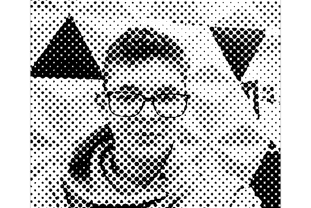

Close Bio
Character
Bio

You are someone that recently lost someone too close to you
And you've been depressed ever since it happend.
You also recently moved out from the big city to a village
It was hard for you to leave your home town because, your friends and family are there!
Hopefully can you visit them once again.
Since your depression you can't stop staring at your bedrooms sealing and greef.
You're also thinking to end it all, and just give it up on life
Since an short period you've been feeling better but it's still isn't far from good
Somehow you also can't take control over your choices.
It feels like your'e getting controlled by some kind of unknown force that picks whatever it thinks
This is you